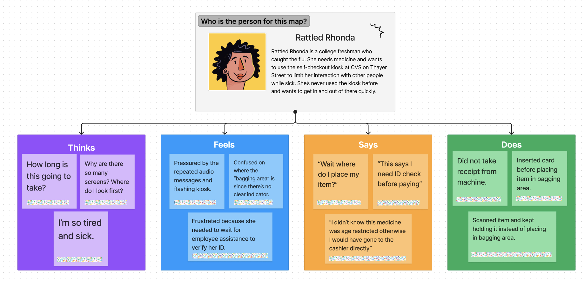

In this project, we stepped into a user’s shoes.
After observing real users interacting with the CVS self checkout interface, we interviewed them about their experiences, created personas based on these users, and illustrated a storyboard for one of them.
Through this process, we are able to pinpoint pain points in the user experience and highlight how and where to improve the self checkout kiosk to provide an easier overall experience for customers.
The self checkout kiosk at CVS on Thayer is designed to reduce lines and provide an efficient and contactless way for customers to check out. Users are to follow directions listed on the kiosk both visually and audibly, starting with scanning their item, placing it in the bagging area, paying via pin pad, collecting their receipt, and then leaving with their item. However, this transaction doesn't always go as smoothly as intended.
1. Why might you want to use self-checkout as opposed to cashier service?
2. What are important help messages/guidance you would want from the self checkout kiosk?
3. How would your ideal self-checkout kiosk look in terms of screens, bagging area, and payment sections?
1. The kiosk interface is confusing to users because there are no straightforward or labeled steps to follow. The kiosk screen has four buttons on a grid with no hierachy to indicate which to press first, if any.
2. Because there are two screens, with the kiosk providing audible instructions and payment machine to the right asking the user to insert their card, users get overwhelmed and confused at which screen to follow or look at. This can lead to users wrongly inserting their card or attempting to pay before scanning their items.
3. If a user wants to use their CVS card to cash in discounts or rewards, they are unsure when to do so. There is a button that says "Phone Number Lookup," but it does not tell the user that they need to press that before scanning their items. Once items have been scanned, they no longer have the option to input their phone number, causing users to be unable to use their card.
4. If a user wants to buy certain medicine, energy drinks, etc, it requires a CVS employee override which is displayed towards the end of the process (right before paying), which essentially defeats the whole purpose of self checkout. Because there is no message or warning about what items need employee supervision, it can be frustrating to customers who have to wait for an employee assistance while doing self checkout.
5. The kiosk presents a "Thank you for shopping with CVS" message right after the user has paid, but the receipt is printed from the payment machine to the right a couple seconds after. This causes many users to forget their printed receipt and walk away.
We created two user persona maps from our interviews. In these maps, we highlight what a certain type of users would think, feel, do, and say while using the self checkout kiosk. Our two personas are Rattled Rhonda and Experienced Evan.
Through this process, we are able to look at some pain points in the user experience and highlight how and where to improve the self checkout kiosk to provide an easier overall experience for CVS customers.